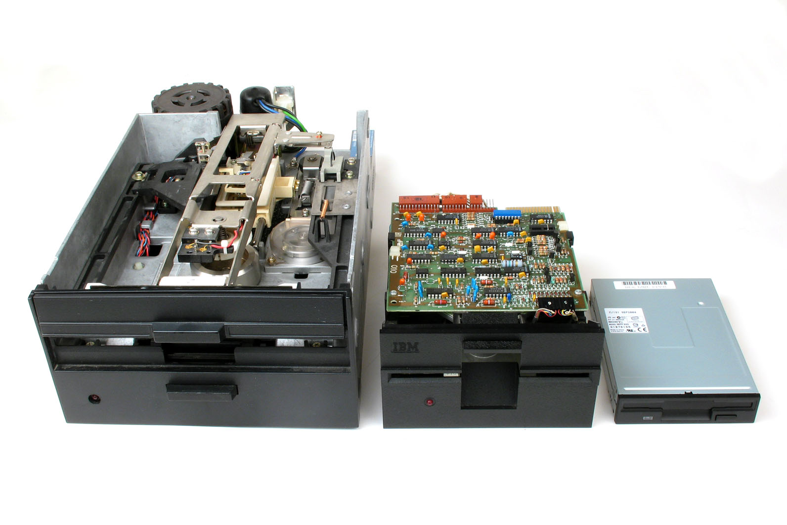

Una unidad de disquete o disquetera se utiliza para leer y escribir datos en disquetes. Pueden ser internas, que están integradas en una carcasa de ordenador, y externas, que tienen su propia carcasa y están conectadas al ordenador a través de un cable. El disco de datos correspondiente se llama disquete.
